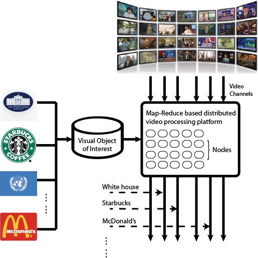
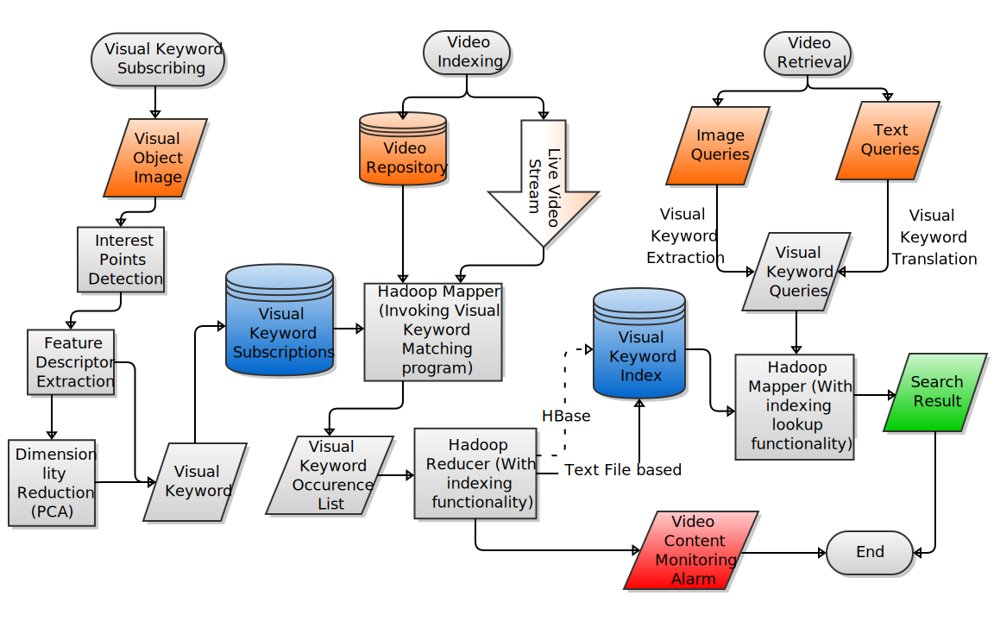

Visual Keyword
Dingcheng Ren

Example
Use Case
Use Case
Label-based Approaches
Advantages:
Disadvantages:
Content-based Approaches
Disadvantages:
Advantages:
Challenges
Accuracy
Efficiency
Scalability
Architecture Overview
Scale Invariant Feature Transform
Characteristics:
How to get it?
Keypoints detector
Keypoints descriptor
Feature Detector (SIFT)
Feature Detector (SIFT)
Diff(Original,Blurred)

Interest Points

Descriptors
Improving response time
Keypoint detection is expensive
Solution: Don't do it!
Result: average processing can be real-time (24fps+)
Video decoding using FFMpeg
FFMpeg can:
- Decode any popular video codec and format
- flv, mpeg, mov, avi, etc.
- Fetch frames in different color spaces
- RGB, CMYK, HSV, etc.
- Process both video files or video streams
- In our case, we feed streams through standard input
What about scalability?
Hadoop to the rescue!
- Distributed storage (HDFS)
- Distributed job execution (Map-Reduce)
- Failure handling
- Computation goes to data
Map-Reduce:
- Mappers and Reducers
- Atom data unit is key value pair
Map-Reduce Architecture

Map-Reduce Sample Code
Visual Object Subscription
- Users submit object images
- Visual engine extracts visual keywords
- as collection of SIFT descriptors
- Visual keywords dictionary is kept in Hadoop's distributed cache
MR Visual Keyword Indexing
Mapper:
- Input:
- Key: Video ID
- Value: Video file or stream URI
- Output:
- Key: Object ID
- Value: Video ID, occrence frame #
Reducer:
- Input:
- Key: Object ID
- Value: Array of (Video ID, occrence frame #)
- Output:
- Inverted Index of object occurences in videos
- Example:
- Object1: Video1,frame#; Video2,frame#; ...
- Object2: Video2,frame#; Video5,frame#; ...
MR Visual Keyword Query
For monitoring, we are already done.
For searching:
- Translate query to visual keyword representation
- Put query in the distributed cache
- Mapper:
- Input: (ObjectID, VideoID_list)
- Output: (*, VideoID_list)
- Reducer concatenates the output of Mapper
Presentation made with